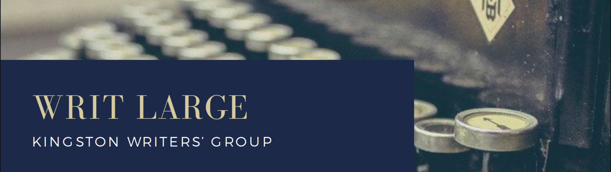

Members of Writ Large have access to the Critique Partner Database at the
Ottawa Writer's Circle. With an account on the OWC website you also get access to their forums, blog, and other resources.
Writing Craft
- King, Stephen. On Writing: 10th Anniversary Edition. Simon & Schuster, 2010. URL KFPL
- Callahan, Diane. Quotidian Writer YouTube Channel. URL
- Weiland, K.M. Helping Writers Become Authors. URL
Story Structure
- Weiland, K.M. Helping Writers Become Authors. URL
World Building
- Reynolds, Alistair, Nnedi Okorafor, Ann Leckie, Becky Chambers, Kim Stanley Robinson and M John Harrison. 'If the aliens lay eggs, how does that affect architecture?': sci-fi writers on how they build their worlds. URL
Critique Circles
- Inked Voices Critique Cheat Sheet. URL
Publication
- Maum, Courtney. Before and After the Book Deal: A Writer's Guide to Finishing, Publishing, Promoting, and Surviving Your First Book. Catapult, 2020. URL KFPL